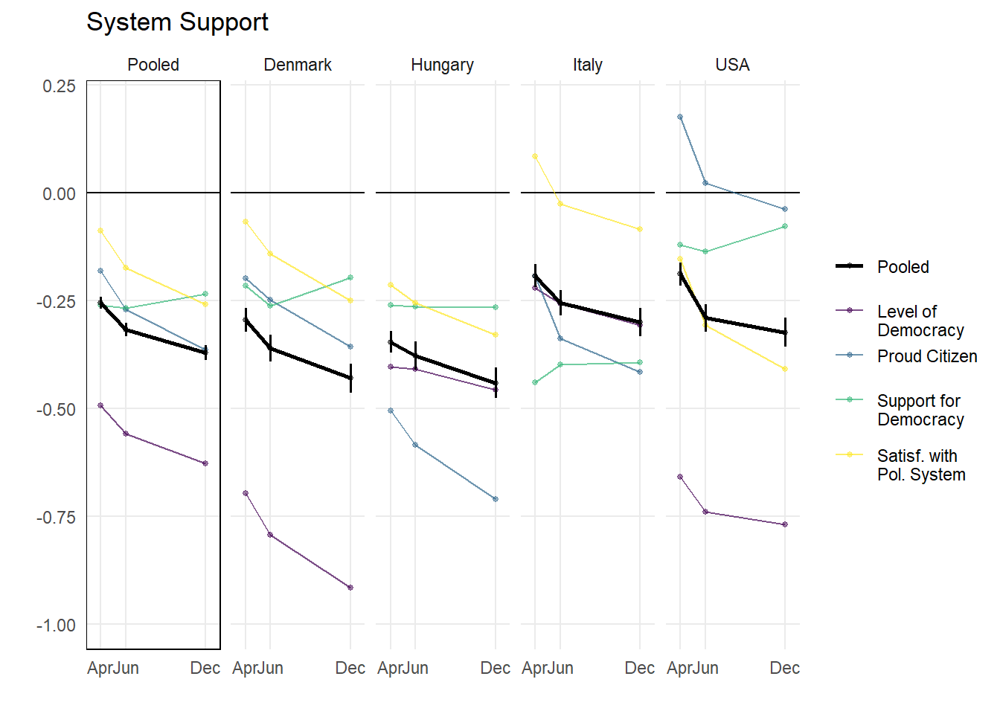

Reproducible research skills
Open peer review of an article

For this project I’ll be testing my reproducible research skills reviewing the reproducibility and reporting practices of the article; The COVID-19 Pandemic Eroded System Support but not Social Solidarity
Project enviroment of the article
My chosen article have the following project enviroment:
Impressions of the code
If we open the R script “agg_plot.R” we could find the following code:
# a function to calculate quantile for a specific CI width
myquantile <- function(ci){
alpha = (100-ci)/2/100
qnorm(1-alpha)
}
# custom functions for calculating weighted mean and SE which work inside functions
mymean <- function(x,w) {wtd.mean(x = x, weights = w, na.rm = T)}
myse <- function(x,w) {sqrt(wtd.var(x, weights = w, na.rm = T))/sqrt(length(x))}
# Import data -------------------------------------------------------------
df_full <- readRDS("B-analysis-data/yougov_clean_202204122.rds")
var_lookup <- readRDS("B-analysis-data/varlookup.rds")
# Figure 1. Benchmarked changes in Solidarity and System support ------------------------------
# ~ Crunch Systemic variables -----------------------------------------------------
system_dvs <- c("system_satisfaction.z", "level_democracy.z", "supp_demcy.z",
"proudcitizen.z")
# 4*3 country-wave means for individual outcomes
system_4c <- df_full %>%
# subset to relevant vars for system support
dplyr::select(country, weight, wavedate, all_of(system_dvs)) %>%
# calculate weighted mean by country-waves
pivot_longer(all_of(system_dvs), names_to = "dv") %>%
group_by(country, wavedate, dv) %>%
summarise(mean = mymean(value, weight),
se = myse(value, weight)) %>% glimpse
# reported in the text:
system_4c %>%
group_by(country) %>%
summarise(sum(mean > 0))
# reported in the text:
system_4c %>%
filter(country %in% c("Denmark")) %>%
filter(dv %in% c("level_democracy.z") &
wavedate == ymd("2020-12-12"))
# ---------------------A LOT MORE OF DATA WRANGLING AND ANALYSIS ------------------------
# ~ Draw system plot ---------------------------------------------------------
# ~ Panel A of Figure 1
system_facet <- ggplot(system_plotdata, aes( x = wavedate, y = mean, color = dv)) +
geom_rect(data = filter(system_plotdata, country == "Pooled"),
fill = NA, color = "black",
xmin = -Inf, xmax = Inf,
ymin = -Inf, ymax = Inf) +
geom_hline(aes(yintercept = 0)) +
geom_point(size = 1, alpha = .5) +
geom_line(aes(group = dv), alpha = .7) +
# add extra width to pooled lines
geom_line(data = filter(system_plotdata,dv == "Pooled"), size = 1) +
# add errorbars only to pooled estimates
geom_errorbar(data = filter(system_plotdata,dv == "Pooled"),
aes(ymin = mean - myquantile(95)*se,
ymax = mean + myquantile(95)*se),
size = .6, width = 0) +
xlab("") + ylab("") +
scale_color_manual(name = NULL,
values = c("#000000", viridisLite::viridis(4)),
labels = c("Pooled",
"\nLevel of \nDemocracy",
"Proud Citizen",
"\nSupport for \nDemocracy",
"\nSatisf. with \nPol. System")
) +
scale_x_date(breaks = ymd(c("2020-04-20","2020-06-15","2020-12-12")),
limits = ymd(c("2020-04-01", "2020-12-31")),
date_labels = "%b") +
ggtitle("System Support") +
facet_grid(~country) +
scale_y_continuous(limits = c(-1, .2)) +
theme_minimal() +
theme(panel.grid.minor = element_blank())
system_facet## Rows: 48
## Columns: 5
## Groups: country, wavedate [12]
## $ country <chr> "Denmark", "Denmark", "Denmark", "Denmark", "Denmark", "Denmark", "Denmark", "Denmark", "Denmark…
## $ wavedate <date> 2020-04-20, 2020-04-20, 2020-04-20, 2020-04-20, 2020-06-15, 2020-06-15, 2020-06-15, 2020-06-15,…
## $ dv <chr> "level_democracy.z", "proudcitizen.z", "supp_demcy.z", "system_satisfaction.z", "level_democracy…
## $ mean <dbl> -0.69705093, -0.19933124, -0.21590985, -0.06795452, -0.79319215, -0.24868934, -0.26202182, -0.14…
## $ se <dbl> 0.03401541, 0.02883877, 0.02366249, 0.02493922, 0.03692481, 0.03168742, 0.02632567, 0.02744196, …## # A tibble: 4 × 2
## country `sum(mean > 0)`
## <chr> <int>
## 1 Denmark 0
## 2 Hungary 0
## 3 Italy 1
## 4 USA 2## # A tibble: 1 × 5
## # Groups: country, wavedate [1]
## country wavedate dv mean se
## <chr> <date> <chr> <dbl> <dbl>
## 1 Denmark 2020-12-12 level_democracy.z -0.916 0.0428## Rows: 12
## Columns: 5
## Groups: country [4]
## $ country <chr> "Denmark", "Denmark", "Denmark", "Hungary", "Hungary", "Hungary", "Italy", "Italy", "Italy", "US…
## $ wavedate <date> 2020-04-20, 2020-06-15, 2020-12-12, 2020-04-20, 2020-06-15, 2020-12-12, 2020-04-20, 2020-06-15,…
## $ mean <dbl> -0.2950616, -0.3615610, -0.4304080, -0.3466159, -0.3783803, -0.4410880, -0.1925701, -0.2555717, …
## $ se <dbl> 0.01440347, 0.01583371, 0.01736561, 0.01285579, 0.01680848, 0.01813122, 0.01381664, 0.01529698, …
## $ dv <chr> "Pooled", "Pooled", "Pooled", "Pooled", "Pooled", "Pooled", "Pooled", "Pooled", "Pooled", "Poole…## Rows: 12
## Columns: 5
## Groups: wavedate [3]
## $ wavedate <date> 2020-04-20, 2020-04-20, 2020-04-20, 2020-04-20, 2020-06-15, 2020-06-15, 2020-06-15, 2020-06-15,…
## $ dv <chr> "level_democracy.z", "proudcitizen.z", "supp_demcy.z", "system_satisfaction.z", "level_democracy…
## $ mean <dbl> -0.49391135, -0.18197042, -0.26015389, -0.08754136, -0.55958182, -0.27035667, -0.26809312, -0.17…
## $ se <dbl> 0.01516400, 0.01477147, 0.01109283, 0.01313228, 0.01781351, 0.01725895, 0.01311345, 0.01501777, …
## $ country <chr> "Pooled", "Pooled", "Pooled", "Pooled", "Pooled", "Pooled", "Pooled", "Pooled", "Pooled", "Poole…## Rows: 3
## Columns: 5
## $ wavedate <date> 2020-04-20, 2020-06-15, 2020-12-12
## $ mean <dbl> -0.2558943, -0.3181518, -0.3712863
## $ se <dbl> 0.006884393, 0.008026691, 0.008694820
## $ country <chr> "Pooled", "Pooled", "Pooled"
## $ dv <chr> "Pooled", "Pooled", "Pooled"## # A tibble: 3 × 5
## wavedate mean se country dv
## <date> <dbl> <dbl> <chr> <chr>
## 1 2020-04-20 -0.26 0.00688 Pooled Pooled
## 2 2020-06-15 -0.32 0.00803 Pooled Pooled
## 3 2020-12-12 -0.37 0.00869 Pooled PooledReadibility
After seeing this code my first impressions are:
This code is a combination of various data wrangling and analysis steps, including custom functions to streamline the workflow for this project. These various step are needed to plot the various plots inside the code and article.
The code is really well documented. It has a lot of comments indicating what is the function of each chunk code inside code. This make more easy to understand what does the code do.
The name of each variable and object makes sense. They don’t have a random name, which makes easier to understand what is inside of object/list.

Reproducibility
To rate the reproducibility of this article, I will try to reproduce the first plot in the R script “agg_plot.R”. I will try to reproduce the the next code:
# ~ Draw system plot ---------------------------------------------------------
# ~ Panel A of Figure 1
system_facet <- ggplot(system_plotdata, aes( x = wavedate, y = mean, color = dv)) +
geom_rect(data = filter(system_plotdata, country == "Pooled"),
fill = NA, color = "black",
xmin = -Inf, xmax = Inf,
ymin = -Inf, ymax = Inf) +
geom_hline(aes(yintercept = 0)) +
geom_point(size = 1, alpha = .5) +
geom_line(aes(group = dv), alpha = .7) +
# add extra width to pooled lines
geom_line(data = filter(system_plotdata,dv == "Pooled"), size = 1) +
# add errorbars only to pooled estimates
geom_errorbar(data = filter(system_plotdata,dv == "Pooled"),
aes(ymin = mean - myquantile(95)*se,
ymax = mean + myquantile(95)*se),
size = .6, width = 0) +
xlab("") + ylab("") +
scale_color_manual(name = NULL,
values = c("#000000", viridisLite::viridis(4)),
labels = c("Pooled",
"\nLevel of \nDemocracy",
"Proud Citizen",
"\nSupport for \nDemocracy",
"\nSatisf. with \nPol. System")
) +
scale_x_date(breaks = ymd(c("2020-04-20","2020-06-15","2020-12-12")),
limits = ymd(c("2020-04-01", "2020-12-31")),
date_labels = "%b") +
ggtitle("System Support") +
facet_grid(~country) +
scale_y_continuous(limits = c(-1, .2)) +
theme_minimal() +
theme(panel.grid.minor = element_blank())
system_facetIssues
The first issue that I encounter to reproduce this code had something to do with the importing of the data.
# Import data -------------------------------------------------------------
df_full <- readRDS("B-analysis-data/yougov_clean_202204122.rds")
var_lookup <- readRDS("B-analysis-data/varlookup.rds")There are two main issues with this code:
The first one is a very common issue. Obviously the data/folder structure of the original project differs with my data/folder structure. For this reason the needed file cannot been found in my computer directory
The second one has something to do with the name of the files. The file name yougov_clean_202204122.rds differs with the file name in the folder B-analysis-data. The file name in this folder yougov_clean_20211210.rds.
We can resolve this issue modifing the previous code as follow:
Plot
After resolving this previous issues we can reproduce the next figure:
# ~ Draw system plot ---------------------------------------------------------
# ~ Panel A of Figure 1
system_facet <- ggplot(system_plotdata, aes( x = wavedate, y = mean, color = dv)) +
geom_rect(data = filter(system_plotdata, country == "Pooled"),
fill = NA, color = "black",
xmin = -Inf, xmax = Inf,
ymin = -Inf, ymax = Inf) +
geom_hline(aes(yintercept = 0)) +
geom_point(size = 1, alpha = .5) +
geom_line(aes(group = dv), alpha = .7) +
# add extra width to pooled lines
geom_line(data = filter(system_plotdata,dv == "Pooled"), size = 1) +
# add errorbars only to pooled estimates
geom_errorbar(data = filter(system_plotdata,dv == "Pooled"),
aes(ymin = mean - myquantile(95)*se,
ymax = mean + myquantile(95)*se),
size = .6, width = 0) +
xlab("") + ylab("") +
scale_color_manual(name = NULL,
values = c("#000000", viridisLite::viridis(4)),
labels = c("Pooled",
"\nLevel of \nDemocracy",
"Proud Citizen",
"\nSupport for \nDemocracy",
"\nSatisf. with \nPol. System")
) +
scale_x_date(breaks = ymd(c("2020-04-20","2020-06-15","2020-12-12")),
limits = ymd(c("2020-04-01", "2020-12-31")),
date_labels = "%b") +
ggtitle("System Support") +
facet_grid(~country) +
scale_y_continuous(limits = c(-1, .2)) +
theme_minimal() +
theme(panel.grid.minor = element_blank())
system_facet